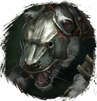

Открыть в интерактивной вики →
| Уровень | 52 |
|---|---|
| Сила (PvE) | 924 |
| Аспект арены | Gherudu |
| Здоровье | 3300 |
| Мана | 3000 |
| Выносливость | 3000 |
Локация
Дроп


Умения
- Удар в Печень — кровотечение обычная атака
- Ярость — боевой клич

Открыть в интерактивной вики →
| Уровень | 52 |
|---|---|
| Сила (PvE) | 924 |
| Аспект арены | Gherudu |
| Здоровье | 3300 |
| Мана | 3000 |
| Выносливость | 3000 |